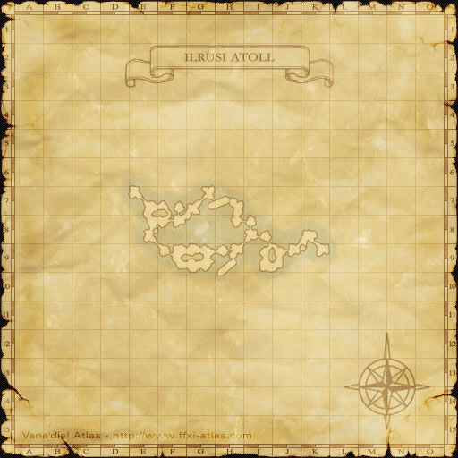
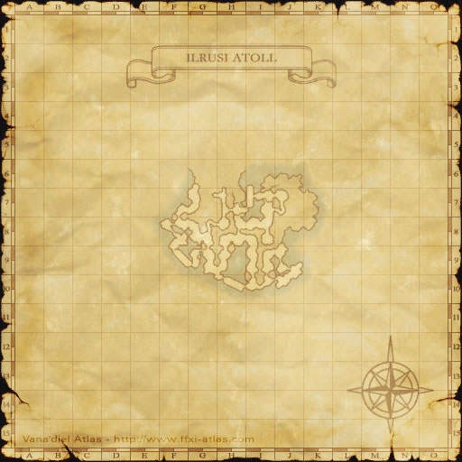
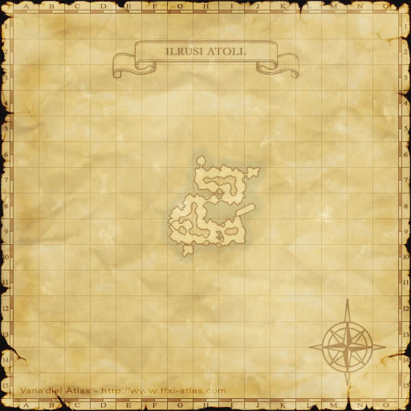
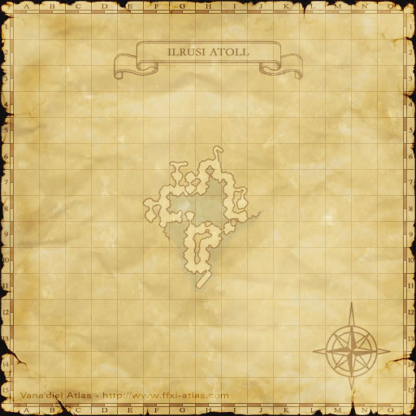
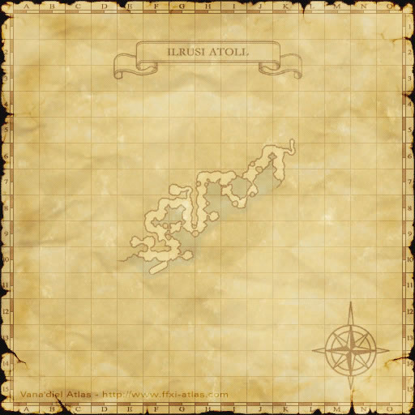
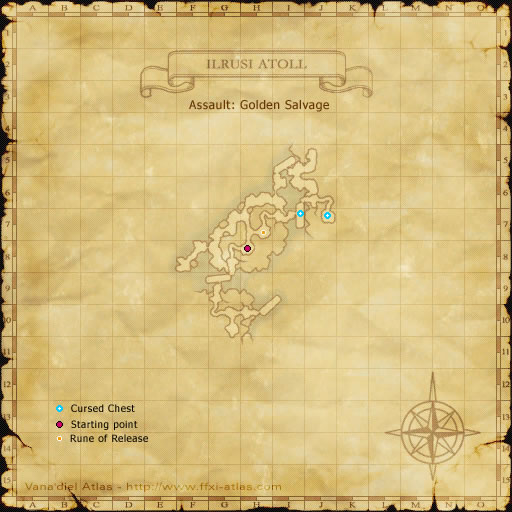
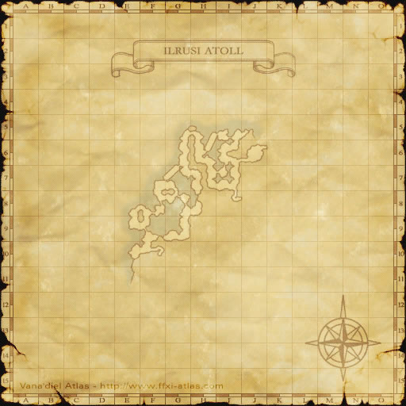

Description
Ilrusi Atoll is a dungeon in Arrapago Islands.
Map
Involved in Quests / Missions
| Quest / Mission | Type | Starter | Location |
|---|---|---|---|
| Duties, Tasks, and Deeds | Mythic | Paparoon | Nashmau (G-7) |
Maps







Story walkthroughs in this area
| Story | Mission / quest |
|---|---|
| ToAU 2 | Immortal Sentries |
References
External references describe their own server or retail rules. Documented Zenith changes take precedence.
Map credits: Map 1 — HorizonXI Wiki · Map 2 — HorizonXI Wiki · Map 3 — HorizonXI Wiki · Map 4 — HorizonXI Wiki · Map 5 — HorizonXI Wiki · Map 6 — HorizonXI Wiki · Map 7 — HorizonXI Wiki · Map 8 — HorizonXI Wiki · Map 9 — HorizonXI Wiki · Map 10 — HorizonXI Wiki. Original game maps © SQUARE ENIX; redrawn maps retain the credited authorship and license.


Additional level-75 reference
|
Situated on the northern most point of the Arrapago Islands just beyond the Arrapago Reef, Ilrusi Atoll is a maze of small islands connected by shallow water and the wrecks of numerous ships and is the den of ferocious sea life as well as the Lamiae and their undead legions. |
Maps
-
Golden Salvage
-
Lamia No.13
-
Extermination
-
Demolition Duty
-
Searat Salvation
-
Apkallu Seizure
-
Lost and Found
-
Deserter
-
Desperately Seeking Cephalopods
-
Bellerophon's Bliss


Connecting Areas
- Arrapago Reef: Ilrusi Atoll Staging Point at (G-5, map 2)
Missions
Name Rank Recommended Level Party Size Points Objective Description Golden Salvage PSC 60 3-6 3000 Recover the figurehead Rumor has it that the golden figurehead from the Black Coffin, the ship of Luzaf the pirate, can be found somewhere within Ilrusi Atoll. Lamia No.13 PFC 70 3-6 1200:3 Eliminate Lamia No.13 Your mission is to hunt down Lamia No.13, a fearsome creature known to have performed vile experiments on the countless corpses of her enemies. Extermination SP 70 3-6 3000 Exterminate all monsters The vermin feasting on the corpses left behind by the Lamiae have multiplied to unnatural numbers. Destroy this threat to the surrounding ecology. Demolition Duty LC 50 3-6 Demolish the shipwrecks A confidential report states that corsairs are secretly collecting the remains of shipwrecks on the Ilrusi Atoll. Use the automaton issued to you by the on-site engineer to demolish these shipwrecks. Searat Salvation C 60 3-6 Save the Qiqirn divers Qiqirn divers assigned the duty of demolishing wrecks on the Ilrusi Atoll have run into a problem with the local wildlife. Lead them back to safety before they decide to abandon their work. Apkallu Seizure S 60 3-6 Capture the apkallu Famous biologist Professor Clavauert is researching apkallu on Ilrusi Atoll. The more discoveries he makes in Aht Urhgan, the more likely he is to join the Empire. Assist him by capturing apkallu. Lost and Found SM 60 3-6 Find the ring The Empress's uncle Bashalab visited Ilrusi Atoll in secret and lost his ring, the "Eye of Zahak." Escort the royal family's hired agent through Ilrusi Atoll and find his lost ring. Deserter CS 70 3-6 Locate the agents Agents of our Anti-Corsair Task Force have gone AWOL and are hiding somewhere in Ilrusi. Your mission is to swiftly disarm the deviants and take them into custody.
All information on these criminals is highly classified and any disclosure of their identity is strictly prohibited.
Desperately Seeking Cephalopods SL 70 3-6 ? Collect ahtapot To increase production of special nighttime camouflage, the Imperial marines require large quantities of a secretion from a rare cephalopod known as the ahtapot, found in the Ilrusi Atoll. Bellerophon's Bliss FL 70 3-6 1500 (always) Defeat Khimaira 14X Troll mercenary leader Martial Maestro Megomak has completed his newest creation, the Khimaira 14X, and taken it to the Ilrusi Atoll for combat testing. You are to locate the abomination and exterminate it.
Rewards
Item Assault Pts Item Assault Pts Item Assault Pts Item Assault Pts Velocity Earring 3,000 Garrulous Ring 5,000 Grandiose Chain 8,000 Hurling Belt 10,000 Invigorating Cape 10,000 Imperial Kaman 15,000 Storm Zaghnal 15,000 Storm Fife 15,000 Yigit Turban 20,000 Amir Dirs 20,000 Pahluwan Khazagand 20,000
Adapted from Eden Wiki: Ilrusi Atoll · Contributors and history · CC BY-SA 4.0. Revision 45661. Layout, links and optional background text adapted for Zenith.